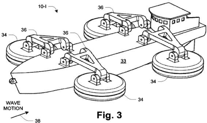
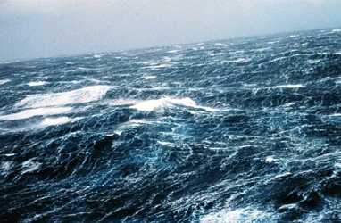

Cuinea energy
From idea to realisation
The use of ocean wave energy

Sea wave generators
Wave energy
Energetics in future
LEFT: A wave containing a lot of kinetic energy CENTER: Using our intelligence to extract the energy by converting wave motion to pump water, for propulsion or, RIGHT: to make clean sustainable electricity for our homes, transport and industry.
Wave energy is the transport of energy by ocean surface waves, and the capture of that energy to do useful work – for example, electricity generation, water desalination, or the pumping of water (into reservoirs). Machinery able to exploit wave power is generally known as a wave energy converter (WEC).
Wave power is distinct from the diurnal flux of tidal power and the steady gyre of ocean currents. Wave-power generation is not currently a widely employed commercial technology, although there have been attempts to use it since at least 1890. In 2008, the first experimental wave farm was opened in Portugal, at the Aguçadoura Wave Park. The major competitor of wave power is offshore wind power.
In fluid dynamics, wind waves or, more precisely, wind-generated waves are surface waves that occur on the free surface of oceans, seas, lakes, rivers, and canals or even on small puddles and ponds. They usually result from the wind blowing over a vast enough stretch of fluid surface. Waves in the oceans can travel thousands of miles before reaching land. Wind waves range in size from small ripples to huge waves over 30 m high.
LEFT: Herman Linden's 'Autonaut' Naples, 1895 MIDDLE: Unknown inventor from Long Beach, CA, shows off his 18" prototype in 1935. Both of these designs show that the concept of capturing or converting wave energy is not exactly new. The latest developments though, are exciting in that they are becoming more practical with refinement. RIGHT: to wit the Suntory Mermaid II from 2010 as a C21 development of the Autonaut concept.
When directly generated and affected by local winds, a wind wave system is called a wind sea. After the wind ceases to blow, wind waves are called swells. More generally, a swell consists of windgenerated waves that are not - or are hardly - affected by the local wind at that time. They have been generated elsewhere or some time ago. Wind waves in the ocean are called ocean surface waves.
Wind waves have a certain amount of randomness: subsequent waves differ in height, duration, and shape with limited predictability. They can be described as a stochastic process, in combination with the physics governing their generation, growth, propagation and decay - as well as governing the interdependence between flow quantities such as: the water surface movements, flow velocities and water pressure. The key statistics of wind waves (both seas and swells) in evolving sea states can be predicted with wind wave models.
Tsunamis are a specific type of wave not caused by wind but by geological effects. In deep water, tsunamis are not visible because they are small in height and very long in wavelength. They may grow to devastating proportions at the coast due to reduced water depth.

This diagram is from a patent application where the arms on either side of a barge move with the rise and fall of waves to generate electricity that is stored onboard the vessel in batteries for later use onshore.
Waves are generated by wind passing over the surface of the sea. As long as the waves propagate slower than the wind speed just above the waves, there is an energy transfer from the wind to the waves. Both air pressure differences between the upwind and the lee side of a wave crest, as well as friction on the water surface caused by the wind movement, has the effect of pushing the water which because it cannot separate (shear stress) causes the growth in height of the waves.
Wave height is determined by wind speed, the duration of time the wind has been blowing, fetch (the distance over which the wind excites the waves) and by the depth and topography of the seafloor (which can focus or disperse the energy of the waves). A given wind speed has a matching practical limit over which time or distance will not produce larger waves. When this limit has been reached the sea is said to be "fully developed".
In general, larger waves are more powerful but wave power is also determined by wave speed, wavelength, and water density.
Oscillatory motion is highest at the surface and diminishes exponentially with depth. However, for standing waves (clapotis) near a reflecting coast, wave energy is also present as pressure oscillations at great depth, producing microseisms. These pressure fluctuations at greater depth are too small to be interesting from the point of view of wave power.
The waves propagate on the ocean surface, and the wave energy is also transported horizontally with the group velocity. The mean transport rate of the wave energy through a vertical plane of unit width, parallel to a wave crest, is called the wave energy flux (or wave power, which must not be confused with the actual power generated by a wave power device).
Fleming (of left hand rule fame) would be proud to see this simple method of generating electricity with a magnet moving up and down inside a coil, or rather, in this example, a coil moving linearly over a magnet fixed to the sea bed - simples.
The first known patent to use energy from ocean waves dates back to 1799 and was filed in Paris by Girard and his son. An early application of wave power was a device constructed around 1910 by Bochaux-Praceique to light and power his house at Royan, near Bordeaux in France. It appears that this was the first oscillating water-column type of wave-energy device. From 1855 to 1973 there were already 340 patents filed in the UK alone.
Modern scientific pursuit of wave energy was pioneered by Yoshio Masuda's experiments in the 1940s. He has tested various concepts of wave-energy devices at sea, with several hundred units used to power navigation lights. Among these was the concept of extracting power from the angular motion at the joints of an articulatedraft, which was proposed in the 1950s by Masuda.
A renewed interest in wave energy was motivated by the oil crisis in 1973. A number of university researchers re-examined the potential to generate energy from ocean waves, among whom notably were Stephen Salter from the University of Edinburgh, Kjell Budal and Johannes Falnes from Norwegian Institute of Technology (now merged into Norwegian University of Science and Technology), Michael E. McCormick from U.S. Naval Academy, David Evans from Bristol University, Michael French from University of Lancaster, Nick Newman and C. C. Mei from MIT.
Stephen Salter's 1974 invention became known as Salter's duck or nodding duck, although it was officially referred to as the Edinburgh Duck. In small scale controlled tests, the Duck's curved camlike body can stop 90% of wave motion and can convert 90% of that to electricity giving 81% efficiency.
In the 1980s, as the oil price went down, wave-energy funding was drastically reduced. Nevertheless, a few first-generation prototypes were tested at sea. More recently, following the issue of climate change, there is again a growing interest worldwide for renewable energy, including wave energy.
Just another Pacific Ocean storm. Yes, but wave energy is also a huge field of energy just waiting to be tapped. The fact it is so vast somehow prevents us thinking about capturing all of that free energy

Wave power devices are generally categorized by the method used to capture the energy of the waves, by location and by the power take-off system. Method types are point absorber or buoy; surfacing following or attenuator oriented parallel to the direction of wave propagation; terminator, oriented perpendicular to the direction of wave propagation; oscillating water column; and overtopping. Locations are shoreline, nearshore and offshore. Types of power take-off include: hydraulic ram, elastomeric hose pump, pump-to-shore, hydroelectric turbine, air turbine, and linear electrical generator. Some of these designs incorporate parabolic reflectors as a means of increasing the wave energy at the point of capture. These capture systems use the rise and fall motion of waves to capture energy. Once the wave energy is captured at a wave source, power must be carried to the point of use or to a connection to the electrical grid by transmission power cables.
The worldwide resource of wave energy has been estimated to be greater than 2 TW. Locations with the most potential for wave power include the western seaboard of Europe, the northern coast of the UK, and the Pacific coastlines of North and South America, Southern Africa, Australia, and New Zealand. The north and south temperate zones have the best sites for capturing wave power. The prevailing westerlies in these zones blow strongest in winter.
There is a potential impact on the marine environment. Noise pollution, for example, could have negative impact if not monitored, although the noise and visible impact of each design varies greatly. Other biophysical impacts (flora and fauna, sediment regimes and water column structure and flows) of scaling up the technology is being studied. In terms of socio-economic challenges, wave farms can result in the displacement of commercial and recreational fishermen from productive fishing grounds, can change the pattern of beach sand nourishment, and may represent hazards to safe navigation. Waves generate about 2,700 gigawatts of power. Of those 2,700 gigawatts, only about 500 gigawatts can be captured with the current technology.
In another promising version of wave energy capture, Israel's Eco Wave Power (EWP) has signed a memorandum of understanding agreement with the Ocean University of China in December of 2012 to fund and test its first commercial scale Wind Clapper and Power Wing wave energy generation system.
EWP had a busy year in 2012. It began with the construction of a small scale proof-of-concept prototype at the Hydro Mechanic Institute in Kiev, and was followed by a medium scale system installed in the Black Sea during the summer. The company has also recently received the Frost & Sullivan Product Award for the development and implementation of the Wave Clapper and Power Wing wave energy harvesting system.
Unlike offshore wave harvesting systems such as the Pelamis system off the coast of Portugal or AWS Ocean Energy's harvesting device floating on Scotland's Loch Ness, energy from rising and falling waves can be captured close to the shore with EWP's system. Additionally, it can be installed on existing structures like breakwaters, piers, and floating and fixed platforms.
Now EWP has partnered with the government-owned Ocean University of China to realize the next phase of the project. According to the terms of the agreement, the university will secure funding for the construction of a commercial-scale development, and then conduct the subsequent research and development work using its state-of-the-art facilities.
"The cooperation between EWP and the Ocean University of China was made possible thanks to the Road Show to China that was organized by MATIMOP – the Israeli Industry Center for R&D – and the Office of the Chief Scientist at the Ministry of Trade and Labor," said David Leb, founder of Eco Wave Power.
The Road Show took seven Israeli companies to Beijing, Tianjin, Changzhou and Jinan during September 2012 to demonstrate clean energy initiatives.
Eco Wave Power is the sole global inventor, owner and developer of the unique EWP wave energy devices. Their wave energy company designs, manufactures and operates the EWP wave energy convertors.
Eco Wave Power is the only wave energy company to win the Frost & Sullivan Product Innovation Award. According to Frost & Sullivan, "Eco Wave Power efficiently handles the prominent challenges prevailing in the field and offers an all-round solution for effective energy harvesting. Based on the aforementioned performance drivers as measured through Frost & Sullivan independent analysis, Eco Wave Power is the recipient of the 2012 Frost & Sullivan New Product Innovation Award"
Wave riding arms on the coast